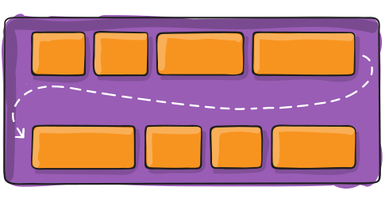

Терминология
Флекс — это не отдельное свойство, но целый модуль, включающий набор свойств. Некоторые из этих свойств
добавляются к контейнеру (родительскому элементу, известному как «флекс-контейнер» (flex container,
далее по
тексту — контейнер)), другие — к дочерним элементам (известным как «флекс-элементы» (flex items, далее
по
тексту — элементы)).
«Обычный» макет основан на потоке из блочных и строчных элементов, а флекс-макет — на «флекс-потоке»
(flex-flow directions). Посмотрите на это изображение из спецификации, демонстрирующее ключевые идеи,
лежащие в основе флекс-макета.

Элементы располагаются вдоль основной (главной) оси (main axis) (от main-start до main-end) или вдоль
поперечной оси (cross axis) (от cross-start до cross-end).
- основная ось — главная ось контейнера, ось, вдоль которой располагаются элементы. Она не обязательно является горизонтальной; это зависит от свойства «flex-direction» (направление, см. ниже)
- main-start | main-end — элементы располагаются в контейнере от main-start до main-end
- основной размер (main size) — ширина или высота элемента в зависимости от основного измерения (main dimension), основной размер элемента
- поперечная ось — ось, перпендикулярная основной. Ее направление зависит от направления основной оси
- cross-start | cross-end — строки контейнера заполняются элементами, которые располагаются от cross-end до cross-start
- поперечный размер (cross size) — ширина или высота элемента в зависимости от основного измерения
Свойства флекс-контейнера
display
Данное свойство определяет флекс-контейнер; блочный или строчный в зависимости от присвоенного
значения. Оно включает «флекс-контекст» для всех прямых потомков контейнера.
.container {
display: flex; /* или inline-flex */
}
Обратите внимание, что свойства CSS-колонок в контейнере не работают.
flex-direction (направление)
Данное свойство определяет основную ось, направление, по которому размещаются элементы в
контейнере.
Флекс сам по себе (без расширяющих его функционал оберток) реализует концепцию однонаправленного
макета.
Поэтому элементы размещаются либо в горизональных строках, либо в вертикальных колонках.
.container {
flex-direction: row | row-reverse | column | column-reverse;
}
- row (по умолчанию): элементы располагаются слева направо в ltr или справа налево в rtl
- row-reverse: обратный row порядок расположения элементов — справа налево в ltr или слева направо в rtl
- column: аналогично row, но сверху вниз
- column-reverse: аналогично row-reverse, но снизу вверх
flex-wrap (перенос, переход, разделение)
По умолчанию, все элементы помещаются в одну строку. С помощью данного свойства можно позволить
элементам перемещаться на следующую строку при необходимости.
.container {
flex-wrap: nowrap | wrap | wrap-reverse;
}
- nowrap (по умолчанию): все элементы располагаются на одной строке
- wrap: элементы могут располагаться на нескольких строках сверху вниз
- wrap-reverse: элементы могут располагаться на нескольких строках снизу вверх
flex-flow (поток)
Данное свойство является сокращением для flex-direction и flex-wrap, которые определяют основную и
поперечную оси контейнера. Значением по умолчанию является row nowrap.
.container {
flex-flow: column wrap;
}
justify-content (выравнивание контента в одной строке)

Данное свойство определяет выравнивание элементов вдоль основной оси. Оно позволяет распределять
свободное пространство, оставшееся неиспользованным элементами с фиксированным размером или гибкими
элементами, достигшими максимального размера. Оно также позволяет управлять выравниванием при
переполнении строки элементами.
.container {
justify-content: flex-start | flex-end | center | space-between |
space-around |
space-evenly | start | end | left | right ... + safe | unsafe;
}
- flex-start (по умолчанию): элементы сдвигаются в начало контейнера вдоль основной оси
- flex-end: элементы сдвигаются в конец контейнера
- start: элементы сдвигаются в начало контейнера, определяемое значением свойства «writing-mode» (направление письма)
- end: элементы сдвигаются в конец контейнера, определяемый значением свойства «writing-mode»
- left: элементы прижимаются к левому краю контейнера; без flex-direction поведение аналогично start
- right: элементы прижимаются к правому краю контейнера; без flex-direction поведение аналогично start
- center: элементы выравниваются по центру
- space-between: элементы выравниваются таким образом, что первый элемент находится в начале строки, последний — в конце, а остальные элементы равномерно распределяются по оставшемуся пространству
- space-around: элементы равномерно распределяются с одинаковым пространством по краям. Обратите внимание, что визуально пространство между элементами и краями контейнера не является одинаковым; это объясняется тем, что элементы занимают определенное пространство по обеим сторонам. Первый элемент занимает одну часть пространства от края контейнера, но две части до второго элемента, поскольку второй элемент также занимает одну часть пространства со стороны первого элемента
- space-evenly: элементы размещаются таким образом, чтобы пространство между любыми двумя элементами являлось одинаковым
Обратите внимание, что поддержка перечисленных свойств разными браузерами различается. Самыми
безопасными являются flex-start, flex-end и center.
Что касается дополнительных ключевых слов «safe» и «unsafe», то использование safe позволяет
избежать
отрисовки элементов за пределами страницы, независимо от позиционирования, что, в свою очередь,
исключает возможность появления прокрутки.
align-items (выравнивание элементов)

Данное свойство определяет, как элементы располагаются вдоль поперечной оси. Его можно сравнить с
justify-content применительно к поперечной оси (перпендикулярной основной).
.container {
align-items: stretch | flex-start | flex-end | center | baseline
| first baseline |
last baseline | start | end | self-start | self-end + ... safe | unsafe;
}
- stretch (по умолчанию): элементы растягиваются, чтобы заполнить весь контейнер (зависит от их min-width/max-width)
- flex-start / start / self-start: элементы смещаются к началу поперечной оси. Различия между указанными свойствами несущественны и зависят от flex-direction или writing-mode
- flex-end / end / self-end: элементы смещаются в конец поперечной оси. Различия между указанными свойствами несущественны и зависят от flex-direction или writing-mode
- center: элементы выравниваются по центру
- baseline: элементы выравниваются вдоль их основной линии
Ключевые слова-модификаторы «safe» и «unsafe» могут использоваться в качестве дополнительных
настроек,
позволяющих избежать такого выравнивания элементов, которое сделает контент недоступным
(недосягаемым,
находящимся за пределами страницы).
align-content (выравнивание содержимого в нескольких строках)

Данное свойство определяет выравнивание строк контейнера при наличии свободного пространство вдоль
поперечной оси. Оно похоже на justify-content, которое распределяет пространство между отдельными
элементами вдоль основной оси.
Обратите внимание, что рассматриваемое свойство применяется только в отношении содержимого
контейнера,
располагающегося на нескольких строках, когда свойство «flex-wrap» установлено в значение «wrap» или
«wrap-reverse». В отношении однострочного контейнера (когда свойство «flex-wrap» имеет стандартное
значение «no-wrap») применение align-content не будет иметь никакого эффекта.
.container {
align-content: flex-start | flex-end | center | space-between |
space-around |
space-evenly | stretch | start | end | baseline | first baseline | last baseline + ... safe |
unsafe;
}
- normal (по умолчанию): строки находится на обычных позициях
- flex-start / start: строки сдвигаются в начало контейнера. flex-start зависит от flex-direction, а start — от writing-mode
- flex-end / end: строки сдвигаются в конец контейнера. flex-end зависит от flex-direction, а end — от writing-mode
- center: строки выравниваются по центру
- space-between: строки располагаются таким образом, что первая строка находится в начале контейнера, последняя — в конце, а остальные строки распределяются равномерно
- space-around: строки располагаются с одинаковым пространством между ними
- space-evenly: строки располагаются с одинаковым пространством вокруг каждой из них
- stretch: строки растягиваются, занимая все доступное пространство
Ключевые слова-модификаторы «safe» и «unsafe» могут использоваться в качестве дополнительных
настроек,
позволяющих избежать такого выравнивания элементов, которое сделает контент недоступным
(недосягаемым,
находящимся за пределами страницы).
Свойства флекс-элементов
order (порядок)

По умолчанию, элементы располагаются в контейнере в том порядке, в котором указаны в разметке.
Данное
свойство позволяет этим управлять.
.item {
order: 5; /* по умолчанию равняется 0 */
}
flex-grow (рост, расширение)

Данное свойство определяет способность элемента к расширению при необходимости. Оно принимает
целочисленное значение, которое выступает в качестве пропорции. Пропорция определяет, какое
количество
доступного пространства в контейнере может занимать элемент.
Если все элементы имеют свойство «flex-grow» со значением 1, доступное пространство будет между
ними
распределяться равномерно. Если значением flex-grow одного из элементов является 2, данный элемент
будет
занимать двойную порцию пространства по сравнению с остальными элементами (или, по крайней мере,
попытается это сделать).
.item {
flex-grow: 4; /* по умолчанию равняется 0 */
}
Отрицательные значения невалидны.
flex-shrink (сжатие, сокращение)
Данное свойство определяет способность элемента к сжатию при необходимости.
.item {
flex-shrink: 3; /* по умолчанию равняется 1 */
}
Отрицательные значения невалидны.
flex-basis
Данное свойство определяет стандартный размер элемента перед распределением оставшегося
пространства.
Этим размером может быть длина (например, 20%, 5rem и т.д.) или ключевое слово. Ключевое слово
«auto»
означает использование значения свойства «width» или «height» элемента (раньше вместо auto
использовалось main-size). Ключевое слово «content» означает учет содержимого элемента. Указанное
ключевое слово пока плохо поддерживается, поэтому сложно определить разницу между min-content,
max-content и fit-content.
.item {
flex-basis: | auto; /* по умолчанию auto */
}
Если значением этого свойства является 0, окружающее элемента пространство не принимается в расчет.
Если значением является «auto», доступное пространство распределяется согласно значению свойства
«flex-grow»
flex
Данное свойство является сокращением для flex-grow, flex-shrink и flex-basis. Второй и третий
параметры
(flex-shrink и flex-basis) являются опциональными. Значением по умолчанию является 0 1 auto, при
этом
auto можно опустить.
.item {
flex: none | [ <'flex-grow'>
<'flex-shrink'>? || <'flex-basis'>
]
}
Рекомендуется использовать данное сокращение вместо определения каждого свойства, это позволяет
автоматически определять значения свойств в правильном порядке.
align-self(выравнивание отдельного элемента)

Данное свойство позволяет перезаписывать дефолтное или установленное с помощью align-self
выравнивание отдельного элемента.
См. объяснение align-items для доступных значений.
.item {
align-self: auto | flex-start | flex-end | center | baseline |
stretch;
}
Обратите внимание, что float, clear и vertical-align применительно к флекс-элементу не имеют
никакого эффекта.